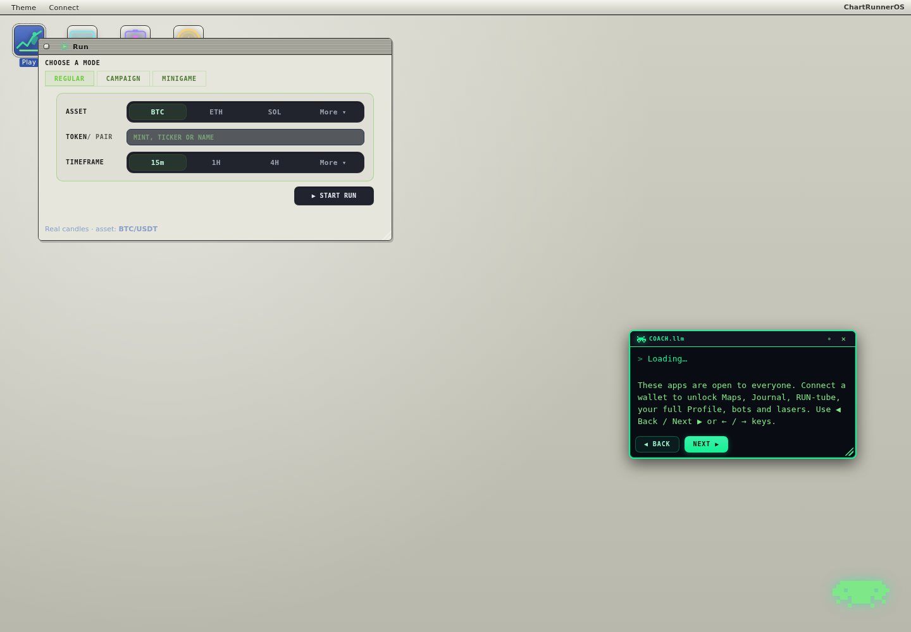

Racing
Pick a ride, hit the countdown, sprint the chart to the finish. Flips shave time. Best lap wins.
> arcade_run :: live_site_content
A free trading game where the market becomes the level. Sprint the candles, dodge volatility, race for best time, and learn how price moves by playing.
Works in your browser on phone and desktop. Press Play, continue as guest, and you are in. Connect a Solana wallet later only if you want to save progress or record a best run.
> playable_truth
ChartRunner keeps the live page promise but makes it feel like the arcade-mobile layout: fast above the fold, terminal copy, Coach explaining the loop, and every public link kept visible. No sign-up, no ads, no pay-to-win. Just run the chart.

> choose_run
Jump into a 20-second arcade dash, survive bears in Monster Mode, weave through candles in Snake, run the classic Time is Money loop, or let COACH.llm teach one market idea at a time in Campaign.
> mode_select
Pick a ride, hit the countdown, sprint the chart to the finish. Flips shave time. Best lap wins.
The chart turns hostile and volatility sends bears after you. Shoot, dodge, and survive the run.
Eat coins to grow as you weave between moving candles. One wrong turn and the run is done.
The classic loop: ride candles, place brackets, and bank a clean score before the clock runs out.
Bite-size chapters with COACH.llm teaching one idea at a time through hands-on play.
A research desk and helper bots scan the chart, explain setups, and help you read the run.
> tutorial_boot
Press Play, continue as guest, pick a mode, and run. Arrow keys or on-screen controls move and jump. The game is simple enough for a phone tap but deep enough to teach price, volatility, and risk.

> coach_steps
Open the game in-browser. No app store, no install, no account wall.
Race, survive, snake, free-run, or learn through Campaign chapters.
Read candle bodies, wicks, volatility, and momentum as moving terrain.
> faq_cache
Yes. Press Play and you are in. No install, no sign-up, no ads, and no pay-to-win.
No. Play everything as a guest. A Solana wallet is optional and only for saving your profile or recording a best run if you choose.
No. Every trade inside ChartRunner is simulated. It does not touch real funds and is not financial advice.
Yes. ChartRunner runs in the mobile browser with on-screen touch controls.
That is the point: the gameplay mirrors price, volatility, and risk so market instincts become physical.
> final_command